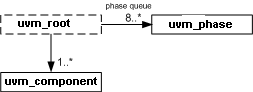

uvm_root
The uvm_root class serves as the implicit top-level and phase controller for all UVM components. Users do not directly instantiate uvm_root. The UVM automatically creates a single instance of uvm_root that users can access via the global (uvm_pkg-scope) variable, uvm_top.

The uvm_top instance of uvm_root plays several key roles in the UVM.
| Implicit top-level | The uvm_top serves as an implicit top-level component. Any component whose parent is specified as null becomes a child of uvm_top. Thus, all UVM components in simulation are descendants of uvm_top. |
| Phase control | uvm_top manages the phasing for all components. |
| Search | Use uvm_top to search for components based on their hierarchical name. See find and find_all. |
| Report configuration | Use uvm_top to globally configure report verbosity, log files, and actions. For example, uvm_top.set_report_verbosity_level_hier(UVM_FULL) would set full verbosity for all components in simulation. |
| Global reporter | Because uvm_top is globally accessible (in uvm_pkg scope), UVM’s reporting mechanism is accessible from anywhere outside uvm_component, such as in modules and sequences. See uvm_report_error, uvm_report_warning, and other global methods. |
The uvm_top instance checks during the end_of_elaboration phase if any errors have been generated so far. If errors are found a UVM_FATAL error is being generated as result so that the simulation will not continue to the start_of_simulation_phase.
| uvm_root | |
| The uvm_root class serves as the implicit top-level and phase controller for all UVM components. | |
| get() | Static accessor for uvm_root. |
| Simulation Control | |
| run_test | Phases all components through all registered phases. |
| die | This method is called by the report server if a report reaches the maximum quit count or has a UVM_EXIT action associated with it, e.g., as with fatal errors. |
| set_timeout | Specifies the timeout for the simulation. |
| finish_on_completion | If set, then run_test will call $finish after all phases are executed. |
| Topology | |
| top_levels | This variable is a list of all of the top level components in UVM. |
| find | |
| find_all | Returns the component handle (find) or list of components handles (find_all) matching a given string. |
| print_topology | Print the verification environment’s component topology. |
| enable_print_topology | If set, then the entire testbench topology is printed just after completion of the end_of_elaboration phase. |
| Global Variables | |
| uvm_top | This is the top-level that governs phase execution and provides component search interface. |
get()
static function uvm_root get()
Static accessor for uvm_root.
The static accessor is provided as a convenience wrapper around retrieving the root via the uvm_coreservice_t::get_root method.
// Using the uvm_coreservice_t:
uvm_coreservice_t cs;
uvm_root r;
cs = uvm_coreservice_t::get();
r = cs.get_root();
// Not using the uvm_coreservice_t:
uvm_root r;
r = uvm_root::get();run_test
virtual task run_test ( string test_name = "" )
Phases all components through all registered phases. If the optional test_name argument is provided, or if a command-line plusarg, +UVM_TESTNAME=TEST_NAME, is found, then the specified component is created just prior to phasing. The test may contain new verification components or the entire testbench, in which case the test and testbench can be chosen from the command line without forcing recompilation. If the global (package) variable, finish_on_completion, is set, then $finish is called after phasing completes.
die
virtual function void die()
This method is called by the report server if a report reaches the maximum quit count or has a UVM_EXIT action associated with it, e.g., as with fatal errors.
Calls the uvm_component::pre_abort() method on the entire uvm_component hierarchy in a bottom-up fashion. It then calls uvm_report_server::report_summarize and terminates the simulation with $finish.
set_timeout
function void set_timeout( time timeout, bit overridable = 1 )
Specifies the timeout for the simulation. Default is `UVM_DEFAULT_TIMEOUT
The timeout is simply the maximum absolute simulation time allowed before a FATAL occurs. If the timeout is set to 20ns, then the simulation must end before 20ns, or a FATAL timeout will occur.
This is provided so that the user can prevent the simulation from potentially consuming too many resources (Disk, Memory, CPU, etc) when the testbench is essentially hung.
finish_on_completion
bit finish_on_completion = 1
If set, then run_test will call $finish after all phases are executed.
top_levels
uvm_component top_levels[$]
This variable is a list of all of the top level components in UVM. It includes the uvm_test_top component that is created by run_test as well as any other top level components that have been instantiated anywhere in the hierarchy.
find
function uvm_component find ( string comp_match )
find_all
function void find_all ( string comp_match, ref uvm_component comps[$], input uvm_component comp = null )
Returns the component handle (find) or list of components handles (find_all) matching a given string. The string may contain the wildcards,
- and ?. Strings beginning with ‘.’ are absolute path names. If the optional argument comp is provided, then search begins from that component down (default=all components).
print_topology
function void print_topology ( uvm_printer printer = null )
Print the verification environment’s component topology. The printer is a uvm_printer object that controls the format of the topology printout; a null printer prints with the default output.
enable_print_topology
bit enable_print_topology = 0
If set, then the entire testbench topology is printed just after completion of the end_of_elaboration phase.